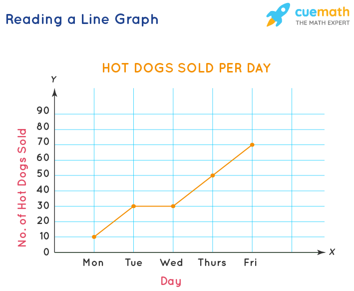
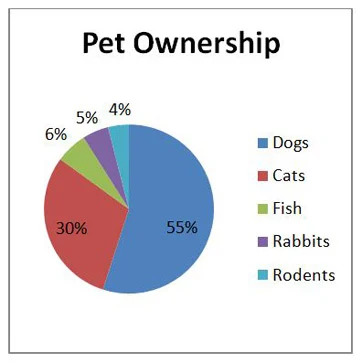
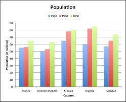
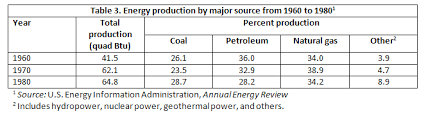

| Pie Chart |  This is what most of you are familiar with, or the first thing that comes into mind when you think of presenting data. Pie graphs are mostly useful in comparing certain numbers of something to a vast category (ex. The number of a specific species of tree in a forest) overall. |
| If you need to make a pie graph manually, we suggest you search videos on Youtube, as it is too complicated to explain in this format. To calculate it: Divide the value of said number by the total quantity of items. 80320 for example, with 80 being the number of clamshells and 320 being the total amount. Then, divide which results in 0.25 and multiply by 100. This is 25%. Then, multiply 25% by 360 degrees and then you get 90 degrees, which will be used for the protractor. Start from the center line then use the angles shown on the protractor till you reach 90 degrees. Repeat for all other values afterward from the 90 degree angle until you finish the graph. |
| Line Graph |  Line graphs are used to compare over time' when' the timespan is short/if you want to show the reactions of things over time. Note that both bar graphs and line graphs use x axis as the IV and y axis as DV. |
| Bar Graph |  Bar graphs are used to compare different numerical quantities. For example: comparing different sugar levels of foods. |
| This is often used also when using time as an indicator when the timespans are long (ex. Months, years) instead of using line graphs. Line graphs can be inaccurate when you use them for long time quantities. Note: Make sure to use a ruler and double check data before coloring! |
| Table |  |
| Just your normal table. Like this but without “table 1.” That's on top of the table, not in it. This is the general formula for a table. However, sometimes you may be asked to calculate the mean if needed. |